Building the system that exists after the program ends
A program that transforms lives.
The Focus Forward Project (FFP) runs a 13 week educational program for individuals under pretrial federal supervision awaiting sentencing. During those 13 weeks the program builds life skills, emotional resilience, financial literacy, and a reentry plan. More than that, it builds a community held together entirely by people who chose to show up.
FFP is run by volunteer facilitators and administrators who show up week after week out of genuine commitment to the people in their classes. That commitment doesn't stop at graduation. Volunteers personally stay in contact with the graduates from their cohorts and when their sentencing day arrives, many of them show up to court, speak on participants' behalf, and present letters of character to the judge (testifying to the growth they witnessed firsthand).
Focus Forward doesn't just change lives — it saves them.
— Focus Forward GraduateThis is a program that transforms lives. Participants describe it as the first place they felt seen without judgment, and the first community that believed in their ability to change. And yet, after week 13, that community has no formal way to sustain itself. There is no follow-up system, no outcome tracking, and no alumni network. The support structure that participants describe as a lifeline simply ends right when some are facing sentencing or incarceration.
The problem isn't a lack of care. The volunteers already go above and beyond anything their roles require. The problem is that the care they give is entirely unsupported by systems, making it invisible to the funders who could help FFP grow.
FFP intervenes at a critical, underserved moment. But without systems to stay connected after graduation, that support disappears exactly when participants need it most.
The two core challenges
Measuring impact
No system exists to track participants after graduation. FFP cannot measure recidivism rates, demonstrate outcomes to funders or courts, or secure larger donations or grants without longitudinal data.
Scaling the program
FFP operates in select municipalities with no structured outreach strategy. Post-graduation is a missing system and the lack of storytelling tools makes it nearly impossible to build public awareness or attract new donors.
Our service design team set out to address both challenges through research, co-design, and actionable service interventions over the span of 10 weeks.
Mapping the full journey and the gap at the end of it.
Before designing anything, we needed to understand the service as it actually existed. We used two complementary frameworks: a Service Design Blueprint and a Cross-Channel Systems Analysis.
Service Design Blueprint
A service blueprint maps every layer of service delivery: what participants experience, what staff do visibly and behind the scenes, and the systems that support it all. Ours spanned six stages: Pre-Enrollment, Enrollment, Onboarding, the 13-week Program, Graduation, and Post-Graduation.
 Service Design Blueprint: Pre-Enrollment through Post-Graduation
Service Design Blueprint: Pre-Enrollment through Post-Graduation
The blueprint was structured across four rows: participant actions, front-stage staff actions, backstage actions, and support processes.
Post-graduation is a missing system. There is no longitudinal tracking, no outcome data collection, and no follow-up platform. The service essentially ends at Week 13.
Cross-Channel Systems Analysis
We then mapped every channel through which FFP delivers its service against each stage of the journey.
| Channel | Post-Graduation Gap |
|---|---|
| Participants | Navigate life independently with no structured follow-up |
| Staff / Facilitators | Occasional check-ins only, not systemized, depends on individual initiative |
| Website / Digital Media | No platform for follow-up or outcome tracking |
| Mobile (Email, Phone, Text) | Manual outreach only, no structured follow-ups |
| Data & Tracking Systems | No longitudinal tracking, no outcome data collected |
| Shared Assets | Missing system: no follow-up platform, no outcome tracking, no reporting dashboard |
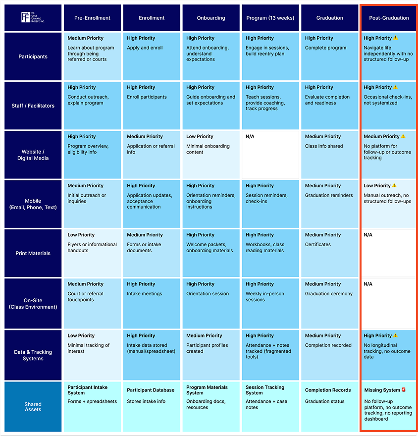
Cross-Channel Systems Analysis matrixGood Services Scale Assessment
We also evaluated FFP against the Good Services Scale, a standard framework for assessing service quality across 15 dimensions.
FFP's overall service quality score
The three areas of greatest struggle: Dead ends (service stops at graduation with no continuation), Inability to respond to change quickly (systems are fragmented and manual), and Not agnostic of organizational structure (too much depends on individual facilitator initiative rather than shared systems).
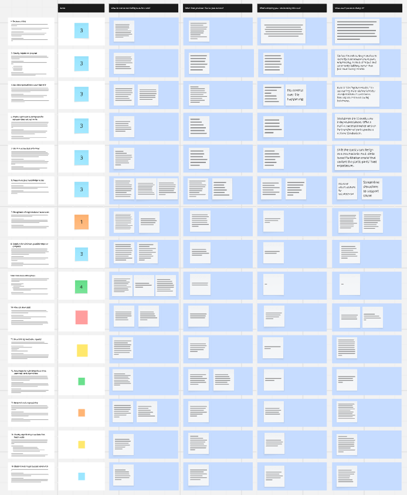
View full Good Services Scale on Miro Good Services Scale rubric with all 15 dimensions scoredDesigning with the community, not just for it.
Service blueprints reveal what exists. Co-design reveals what's needed and what's felt. On April 12, 2026, we ran a 75-minute virtual workshop on Zoom with Miro as a collaborative whiteboard, bringing together 18 participants across three groups.
6 current participants
Active program members, mid-journey through the 13 weeks
6 graduates
Alumni who had completed the program and were navigating life after
6 facilitators & admin
Volunteers who run the program and are closest to its operational gaps
How might we better support Focus Forward Project participants through and beyond program completion — strengthening community ties, post-graduate connection, and FFP's long-term donor and stakeholder ecosystem?
Workshop structure
Miro Warm-Up (5 min)
Since most participants were unfamiliar with Miro and joining from mobile, we opened with a guided tutorial.
Cultural Probe (5 min)
Participants added words or feelings they associate with the Focus Forward program.
Co-Journey Maps × 2 (30 min)
Two parallel breakout groups mapped different journeys: FFP participants and graduates mapped the post-graduation experience, while facilitators and admin mapped the post-sentencing journey.
Brainwriting × 2 (30 min)
Collaborative ideation on staying connected after graduation and donor expansion. The participants shared ideas and built off of eachothers
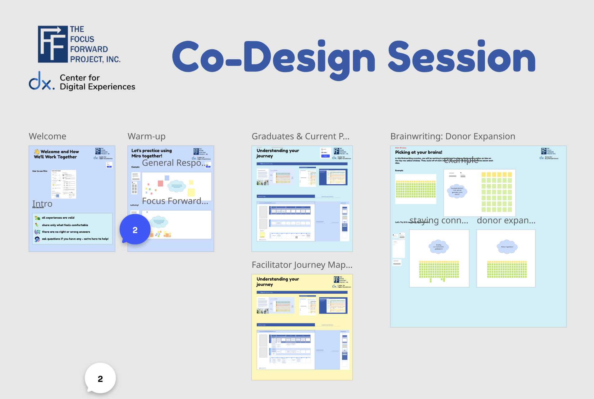
Co-Design Workshop: Miro board overviewThey didn't describe the curriculum. They described how it felt to finally belong.
Listening to participant voices changed how we understood the service entirely. We learned why Focus Forward really matters by hearing stories about identity, fear, and belonging.
When asked a single open prompt: what words or feelings do you associate with Focus Forward? participants didn't describe the curriculum. They described what it felt like to find a supportive community.
Community
A place to belong when the rest of the world doesn't understand.
Safe Space
A judgment-free zone during the most frightening period of their lives.
Support
Volunteers who showed up, checked in, and meant it.
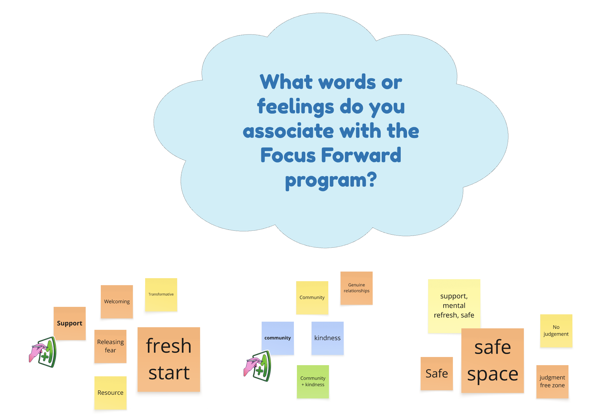
Cultural Probe sticky note clusters from MiroIn their own words
These were people navigating one of the most destabilizing experiences a person can face and the weight of what comes next. What they said in the workshop stayed with us throughout every step that followed.
"The unknown is the scariest part. I would have benefited from hearing from someone who had already been through the process."
— Participant, post-graduation journey map"Focus Forward was a fresh start. It was the first place I didn't feel judged for what I was going through."
— Graduate, cultural probe"There's no pressure to stay in touch after — but I wish there was a way. I still think about the people from my class."
— Graduate, co-journey map"When you have a 97% conviction rate staring you down, the community you built here feels like the only thing that's real."
— Participant, brainwriting (post-graduate communication)The post-graduation cliff
Both co-journey map breakout groups independently arrived at the same finding that the end of week 13 is an emotional cliff. Key themes surfaced across both groups:
No coordinated mechanism to stay connected
Graduates want to maintain connections formed during the program.
Facilitators feel the gap too
Leadership is aware of the post-graduation drop-off. However there is no current shared system for communication.
Probation regulations complicate direct contact
Probation rules can actively discourage communication between participants.
A 97% conviction rate makes community difficult
Participants raised this statistic themselves. FFP's community is essential for the people inside it.
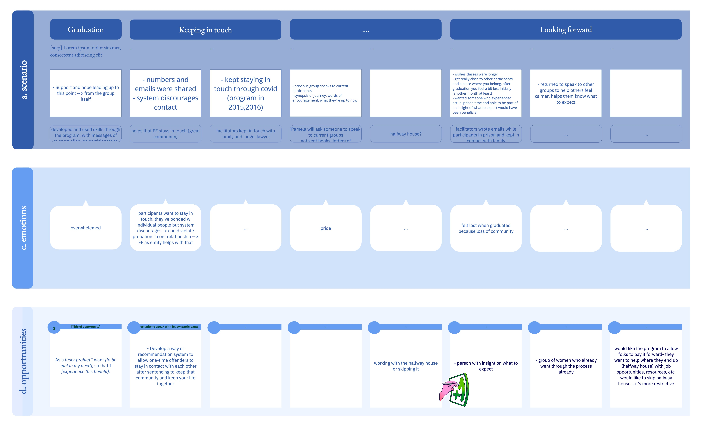
Co-Journey Map: post-graduation communication cliff"I can reach out to participants during this period asking how they're doing — but I need a consistent way to stay in touch. Some people go quiet. Some want to stay very involved. Text really works to get people to stay more in contact."
— Facilitator, co-journey mapWhy stories matter as much as data
The brainwriting session surfaced that for funders recidivism rates alone might not be enough, they needed to hear the real stories behind Focus Forward Project. That story is FFP's most powerful asset and it had never been collected or shared.
The stories exist. The system to capture them doesn't.
Alumni have powerful narratives about transformation and second chances. Without a structured way to collect and share them, that impact stays invisible to everyone outside the immediate relationship.
Donors need to feel the impact, not just measure it.
Funders receive data. What converts them into long-term supporters is evidence they can feel.
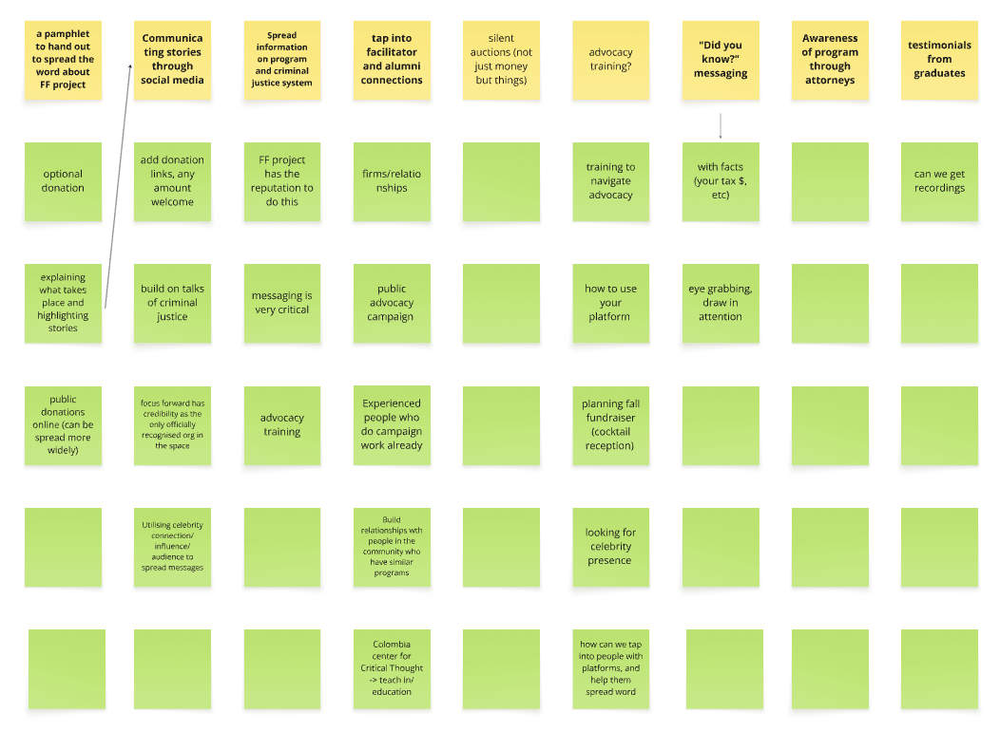
Brainwriting results — donor expansion ideation boardThree interventions, one self-reinforcing ecosystem.
Addressing the gaps and opportunties required a set of interventions that build on each other and together form two ecosystem loops:
Connecting graduates → generates data → sustains funding
Graduate opt-in → facilitator tracking → impact evidence → renewed funding → improved support. Each piece makes the next stronger.
Authentic stories → public awareness → new funding → program growth
Graduate stories shared on social → general public awareness → individual and institutional donors → expansion to new regions and courts.
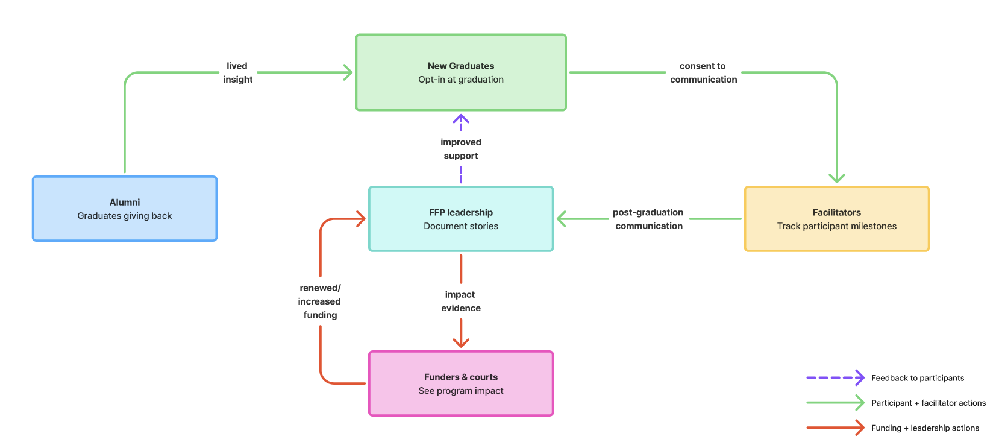
Ecosystem Loop 01 — Tracking Participant Success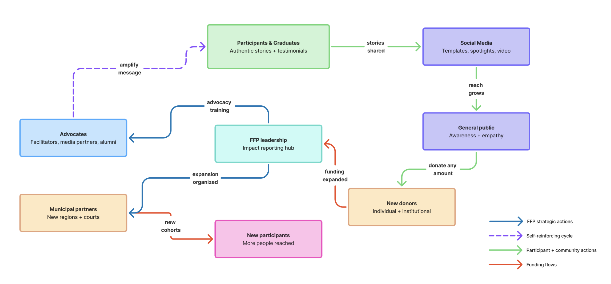
Ecosystem Loop 02 — Donor ExpansionContent Creation Toolkit
A video and visual editing toolkit that empowers FFP to turn long-form alumni footage into short-format social media content with captions. Reducing the workload of maintaining an active social presence with no visual editing experience required.
Turn raw WhatsApp videos or interview recordings into captioned, branded reels in minutes (no video editing skills required).
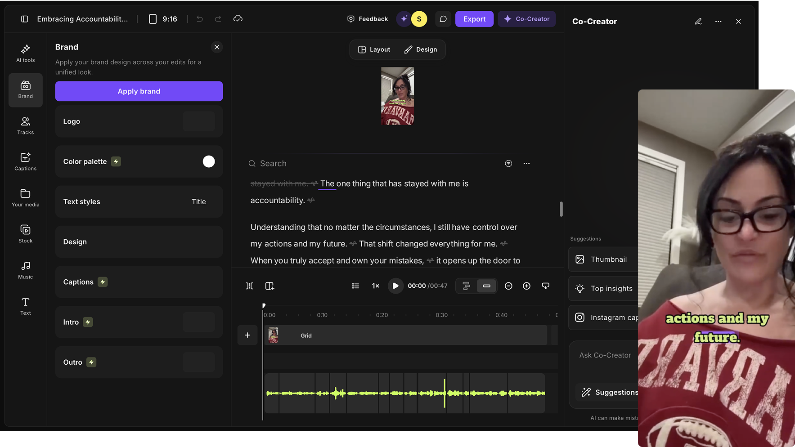
AI video editing interface — Vizard with captionsStructured prompts graduates can pick from when creating content. Topics like "Where I started" or "Inside the program".
Reel Prompt Kit
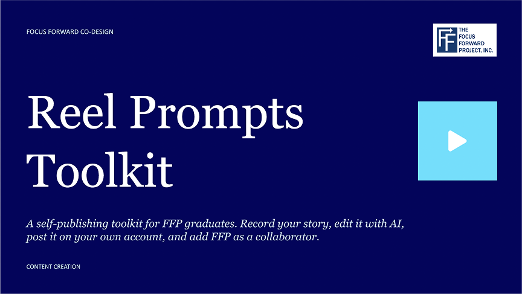
Reel Prompt Toolkit — prompt card set for FFP content creationTransition journey & risks
Getting started
- Assign one volunteer or admin to own the social media workflow
- Start with Vizard for free (limited tokens)
- Pilot with two or three existing alumni testimonial videos before launch
- Reel Prompt cards can be printed for graduation or shared as a PDF
Risks to watch
- Volunteer burnout if content creation falls to one person with no handoff plan
- Some graduates may not want faces or stories public; written consent must be obtained before any post
- Inconsistent cadence undermines credibility; some manual effort is required to maintain social presence. Consider letting alumni post collaborative posts to gain access to their personal followers and network as well.
Facilitator Engagement Toolkit
Three tools that transform ad hoc, individual outreach into a lightweight, durable system. Turning the program's biggest structural gap into a documented, trackable process.
At graduation, participants choose whether to opt in to ongoing contact. Both a print form (for those at Brooklyn MDC) and a Google Form are provided — ensuring follow-up is ethical, wanted, and compliant with probation regulations.
Google Forms — Consent Form
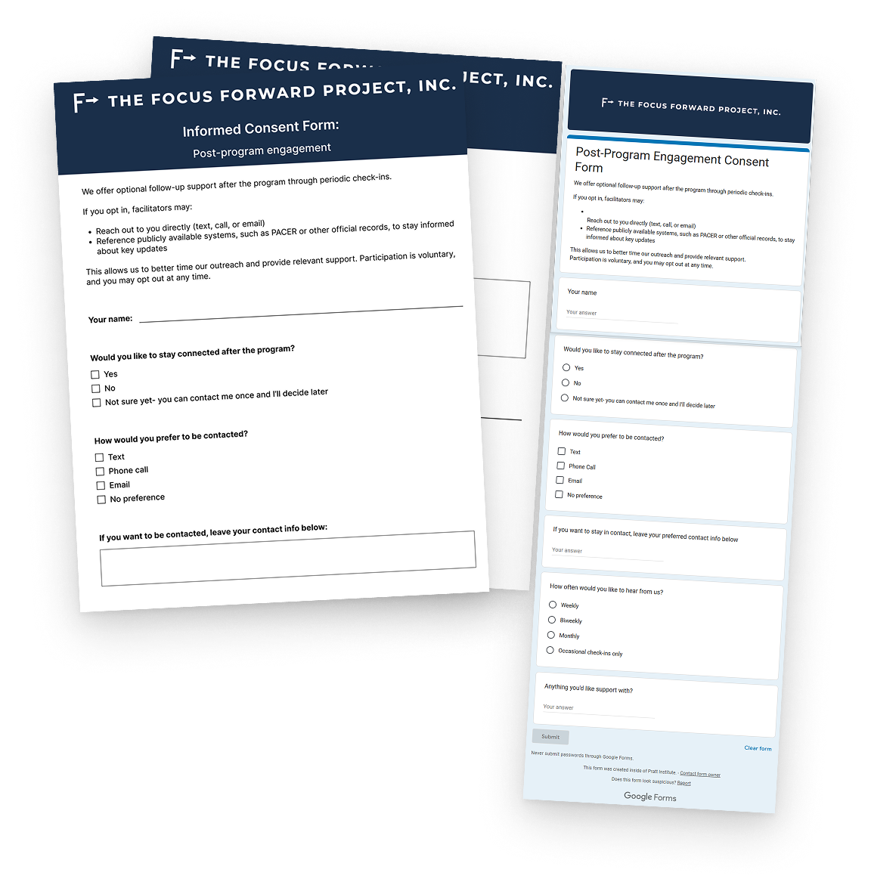
Informed Consent Form — print version and online Google Form side by sideStructured but flexible Google Doc templates for context-dependent check-ins. Optional based on facilitator capacity. Designed to reduce cognitive load so even minimal contact is consistent and counts toward the data picture.
Check-in Template
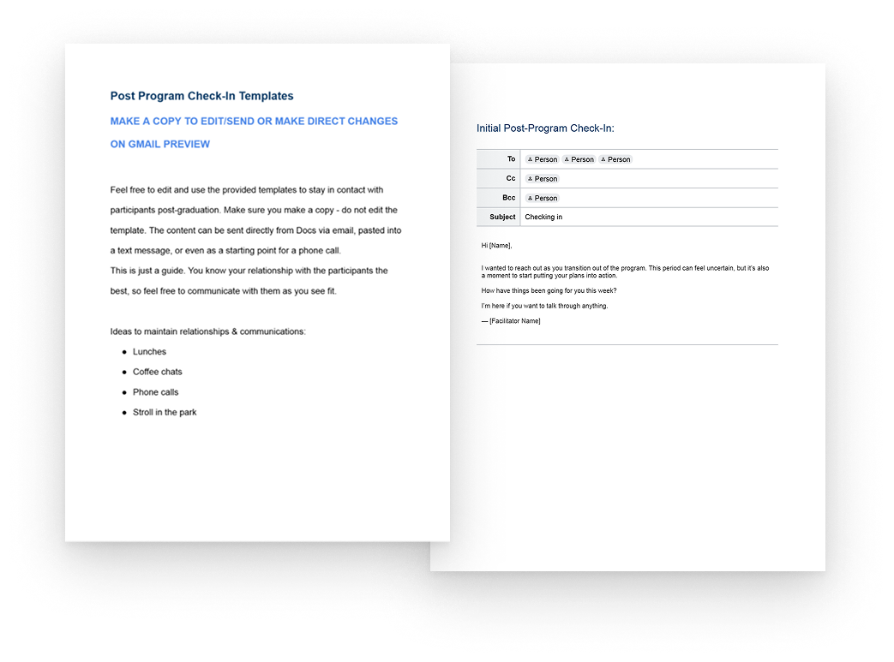
Check-in communication template Google Doc with situation-based guidanceA facilitator tracking sheet using PACER and NYC DOC to log court outcomes and recidivism for opted-in participants. Organizes all points of contact in one place with responsive logic for updates.
Engagement Log
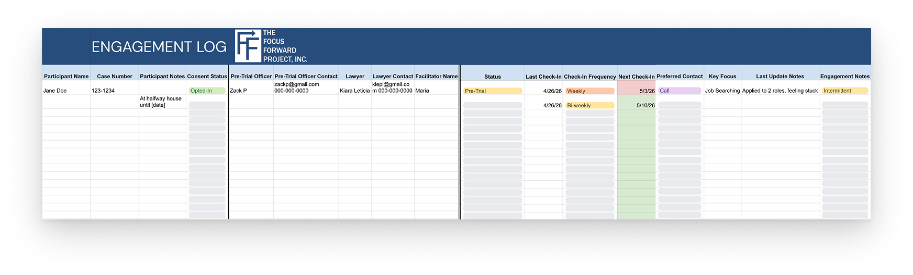
Engagement Log showing participant tracking, check-in frequency, and key focus columnsTransition journey & risks
Getting started
- Introduce the consent form at the next graduation
- Designate one facilitator per cohort as primary point of contact, supported by the templates
- Start the engagement log with the most recent cohort before rolling back to earlier graduates
- Review PACER monthly; NYC DOC at 3-, 6-, and 12-month intervals
Risks to watch
- Volunteer capacity limits: the log only works if someone updates it consistently; consider a dedicated admin role
- Probation restrictions vary by participant; always verify contact terms before outreach
- Data sensitivity: the log contains legal information; access should be restricted and stored securely
- Opt-in rates may start low; normalizing the consent conversation at graduation over time will help
Alumni Communication Hub
A dedicated section of the FFP website that gives graduates a low-pressure, ongoing connection to the community. These Alumni resources are meant to keep the program alive past week 13.
A quarterly newsletter "The Forward Post" will keep alumni informed, connected, and celebrated. Covers class outcomes, community milestones, and alumni successes. Graduates can subscribe and submit updates directly.
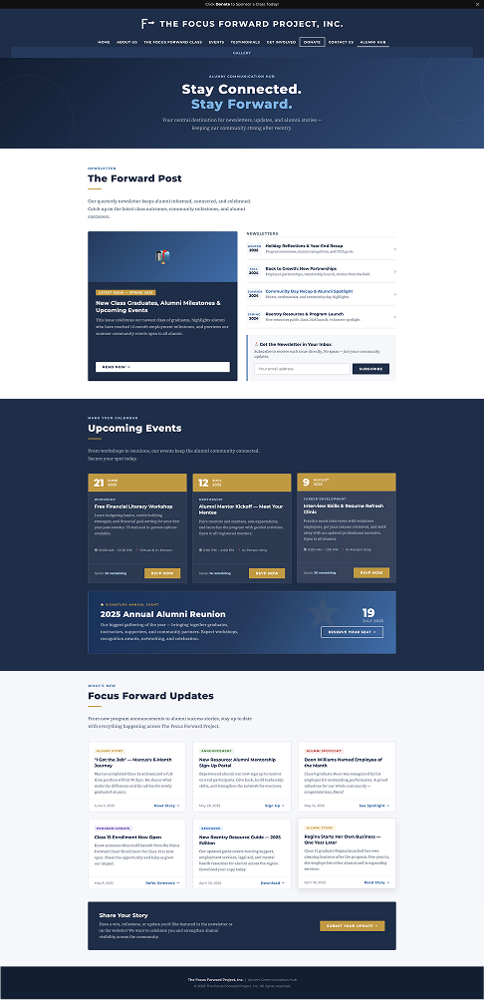
Alumni page — Stay Connected Stay Forward with newsletter archiveThe Forward Post archive with quarterly issues covering program updates, employer partnerships, mentorship launches, and alumni spotlights. Subscribe form embedded for low-friction sign-up.
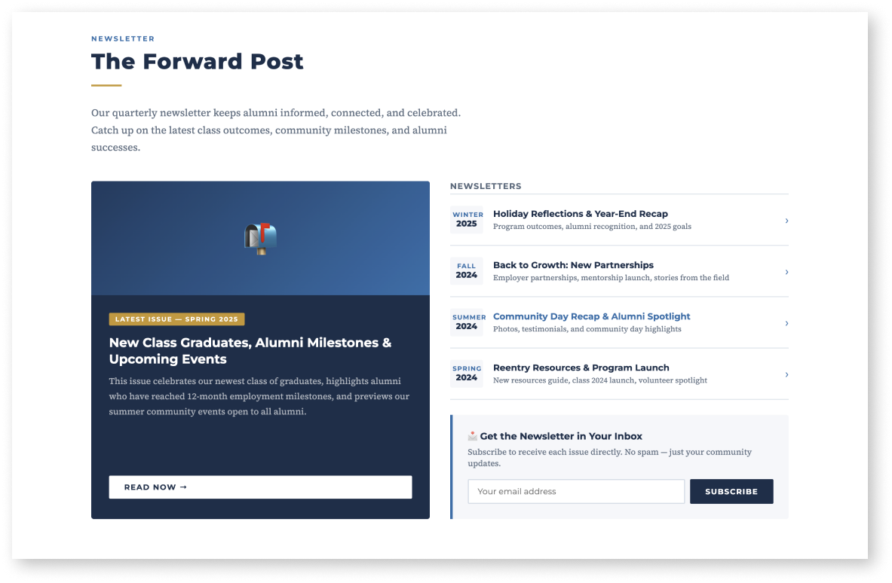
The Forward Post — issue list and subscribe formAn upcoming events page listing workshops, mentorship kickoffs, and the annual alumni reunion with RSVP spots tracked in real time. Creates touchpoints that bring the community together beyond the 13-week cohort.
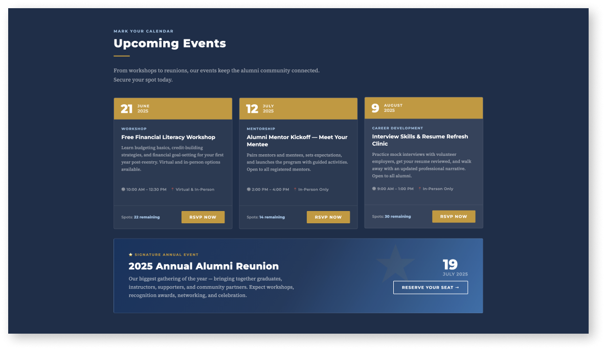
Events page — workshops, Alumni Mentor Kickoff, and annual reunion with RSVP spotsA "Focus Forward Updates" feed featuring alumni success stories, program announcements, and resource releases with a "Share Your Story" form. Continuously grows community voice and gives donors something real to connect with.
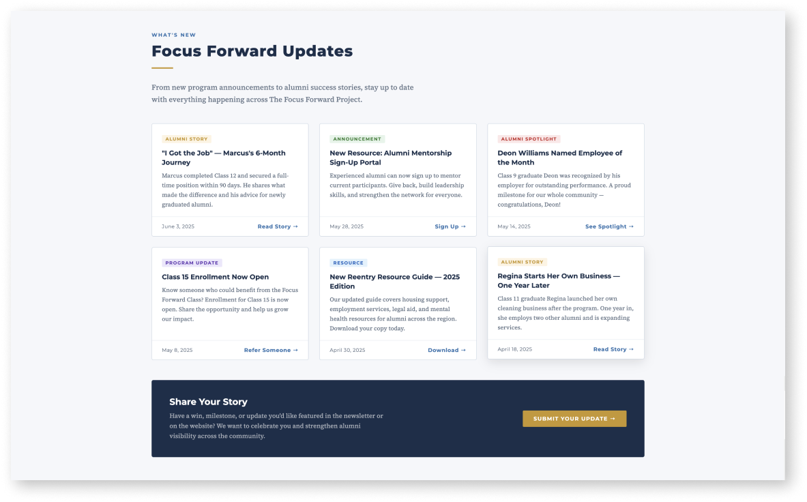
Alumni updates feed — stories, announcements, and share your story CTAA proposed redesign of the FFP testimonials webpage with video testimonials, written stories, and a submission form in one place. Showcases real journeys, drives donor empathy, and enables alumni to continuously add their voices.
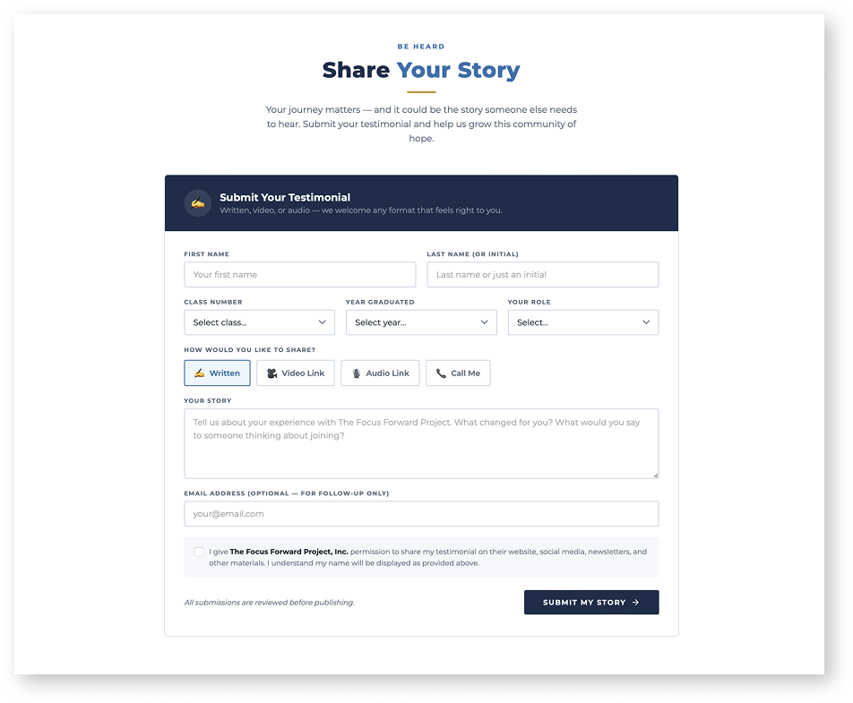
Enabling alumni to share their journey through video or written submission form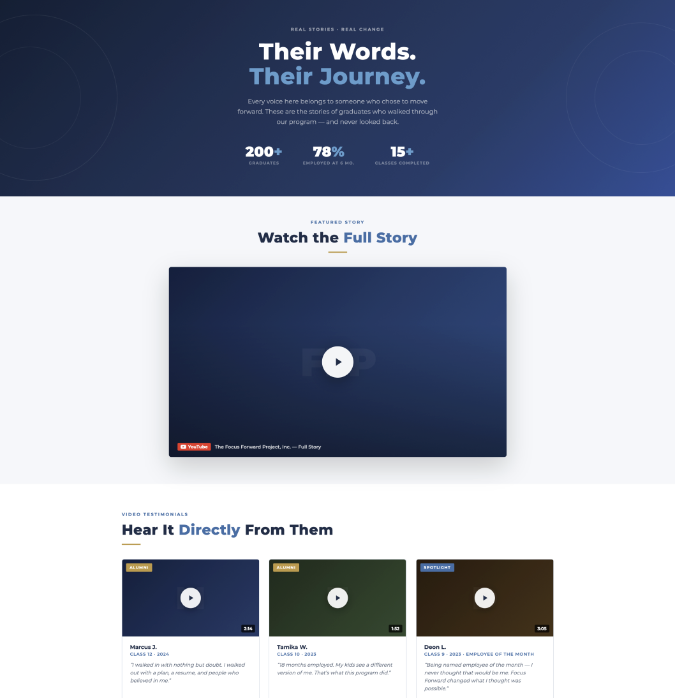
Highlighting alumni stories and testimonials, all in one placeTransition journey & risks
Getting started
- Add the Alumni page as a new nav item on the existing FFP website — no full rebuild required
- Launch The Forward Post with a single pilot issue before committing to a quarterly schedule
- Seed initial testimonials by reaching out personally to two or three graduates
- Start events with virtual-only formats to minimize coordination overhead
Risks to watch
- Content maintenance requires a clear owner, the pages will go stale quickly
- Alumni participation may start slow; seed content is essential before the website feels alive enough to invite contribution
- Testimonials require careful privacy review before publishing such as names, images, and details must be cleared individually
- Events require coordination capacity that FFP doesn't currently have at scale; grow slowly and intentionally
Presenting to Focus Forward and hearing what it meant to them.
At the close of the project, our team presented the full body of work to Focus Forward Project leadership. We walked them through the service blueprint, the co-design workshop findings, and all three intervention toolkits showing not just what we had built, but how each piece connected to the next in a self-reinforcing system.
The response from the FFP team was positive. They described the interventions as practical and were excited to begin implementation. We really strived to present FFP with something that actually fit the system and not just be a list of additional things to do.
 Final presentation to the Focus Forward Project team, Spring 2026
Final presentation to the Focus Forward Project team, Spring 2026
What this project changed about how I think about service design.
A service that ends abruptly is still a service failure, even if the 13 weeks are excellent.
The service blueprint helped visualize a service in a structural way. FFP had invested deeply in every stage of the service journey except the last one. Not from negligence, but because the post-graduation phase had never been defined as a service phase at all. Naming it as such and then designing for it was itself the core intervention. This taught me that the length of a service matters as much as the quality of its components.
Co-design in high-stakes contexts requires deliberate equity of voice.
Running a workshop with participants facing federal charges, graduates navigating reentry, and institutional staff in the same Zoom required active design choices: silent ideation before group build, breakout groups that separated hierarchies, mobile-first Miro access, and prompts that invited the whole person rather than the program critic. The most meaningful insights came from the people and their experiences and stories. Design that doesn't deliberately create space for those voices will always miss the most important things.
Systems thinking means designing the connections, not just the components.
The ecosystem loop diagrams weren't just explanatory artifacts; they were design tools. Mapping how graduate stories feed donor funding which enables program expansion which reaches more graduates helped us see that no single intervention would be sufficient, and that the right set of interventions could be self-reinforcing.
Sometimes the design problem isn't a lack of care, it's a lack of infrastructure to hold it.
The most striking thing I learned from this project is that FFP volunteers were already doing extraordinary things: attending court dates, writing character letters, texting graduates years after graduation. The care was there. What was missing was any system to support, share, or sustain it. This fundamentally changed how I think about service gaps. Not every gap is caused by indifference. Some are caused by people doing too much alone, with too little holding it together. Designing for those situations means honoring what already exists and building structures worthy of it.